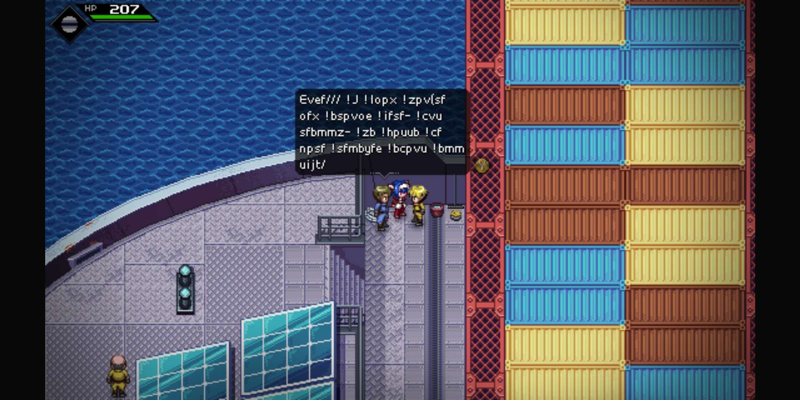
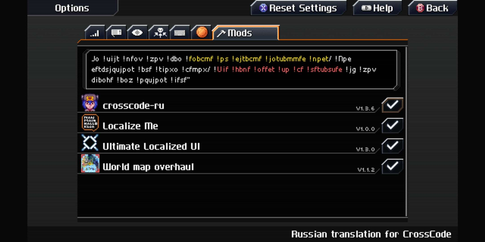

CrossAndroid Font Fixer
Bug: your text looks like this


The fix
Rebuilding the .obb file after having fixed the game files with this tool.
Step-by-step guide
- Open your CrossCode installation directory
- Navigate to assets/media/font
- Click on "Open Files" and select all files, with the exception of:
- hall-fetica.png (gets corrupted)
- icons-buff.png (freezes tool)
- icons-gamepad-old.png (freezes tool)
- any of the "tiny" fonts inside of the "colors" folder (they get corrupted)
- Replace the existing game files with the fixed ones generated by the tool; keep the game files you didn't put through the tool as they already are
- Rebuild the obb file